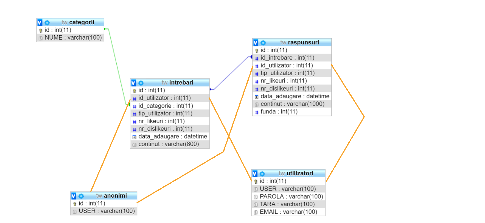

AdWise!
AdWise raport
- Author
-
Alexa Diana-Andreea
Descrierea proiectului
“Unii studenti de la anumite facultati intampina dificultati in rezolvarea problemelor intalnite in mediul de
lucru adica la facultate.
Este necesara o aplicatie unde sa poata pune intrebari si primi raspunsuri.
Se vor prezenta toate intrebarile adaugate, impreuna cu raspunsurile si un top al celor mai apreciate
raspunsuri pe ora, saptamana sau luna.
Tehnologiile utilizate
Pentru crearea interfeței utilizatorului, am folosit HTML și CSS.
Partea de back-end a interfeței a fost realizata cu ajutorul limbajelor: PHP și JavaScript.
Stocarea și managementul datelor au fost realizare utilizând un model de baze de date relațional, MySql.
Funcționalitãțile aplicației
- Aadaugarea de intrebari: orice utilizator, logat sau anonim poate adauga intrebari in baza de date.
Intrebarile vor fi adaugate in functie de categoria specificata si de utilizator.
- Adaugarea de raspunsuri: orice utilizator, logat sau anonim va putea adauga raspunsuri la o anumita intrebare
- Vizualizarea unui top a raspunsurilor oferite in functie de un anumit timp.
- Pentru evitarea SQL injection, s-a folosit functia mysqli_real_escape_string care nu permite utilizatorului sa
introduca date rau intentionate
- Modelul MVC permite o manipulare a datelor mai usor, prin caracteristicele sale. Astfel ca toate
functionalitatile au fost implementate folosind aceasta metoda.
- De fiecare data atunci cand utilizatorul introduce date, acestea sunt trimise printr-un Ajax Call pentru a fi
prelucrate
- Resetarea parolei prin trimiterea unui mail, s-a facut cu SMTP4dev.
Diagrame
Diagrama bazei de date
